|
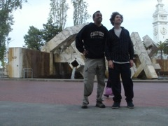 Sometime after FCCM that year, I hung out with Michael in San Francisco... We're fooling around at Embarcadero... |
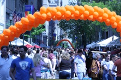 As spring rolled on, Philadelphia celebrated on the streets... specifically Walnut street in this photo... |
That summer, we embarked on a quick trip to Washington DC... If I remember correctly, this was to apply for a French visa... |
|
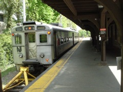 Princeton was also a stone's throw away from Philadelphia.... I went there for NOCS 2007 with a stupid Dinky car.. stupid car, stupid conference. |
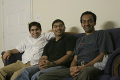 In Atlanta that same year, old friends from Apte Prashala,Ameya Limaye, Chaitanya Deosthale, agreed to be spotted in the same photo as me. Sice then Ameya got married and has a baby in Phoenix... Chaitanya also got married recently but it still in Atlanta.. |
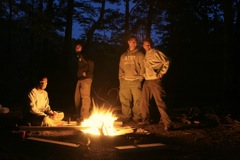 I went camping with Chaitanya and his family that night. Here, we all posed by the campfire... |
|
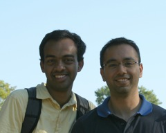 I also met an old friend from high school.. Mr. Sumier Phalake.. He is still in Atlants enjoying the company of a pet cat.. |
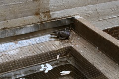 This kabootar was one of the continuing tragedies unfolding outside our lab at Penn.. The female kabootar kept laying eggs which never stayed put in her nest and rolled off into the basin... Nothing ever hatched! |
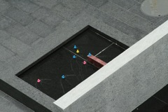 Apart from pigeons, ducks made periodic appearances on campus property.. |
|
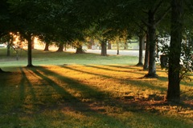 Evenings along the Parkways were very memorable... It was a great way to experiment with my DSLR.. |
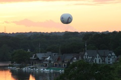 A summer sunset along the Schuylkill.... The Boat House row and the Philadelphia Zoo baloon in the distance.. |
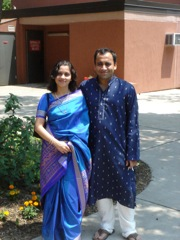 Proximity to NY meant there were other friends in the neighbourhood.. I traveled to NJ to meet Sarika from COEP and her husband Aditya.. |
|
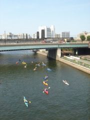 One fine day a boatload of kayakers showed up in the Schuylkill.. The water is not as clean as it looks down here... |
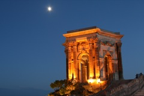 That year, the only work-related thing I remember doing was presenting a paper at the ARITH conference in Montpellier, France... |
During that trip, I took a train to Nice and met Mayank. We spent quite some time up here in Entrevaux castle... with virtually no tourists around, we had the whole castle to ourselves.. |
|
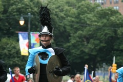 The 4th of July is parade day in USA. This was one of the better parades to make its way across the parkway each year... |
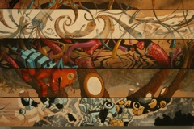 Art studios along 2nd street in Philadelphia showcase many local artists... Every first Friday of the month, the art houses would have open days and let visitors come in... |
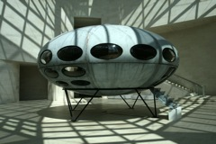 That year I also went on a backpacking trip through Europe... It kicked off in Luxembourg and made its way though several pretty cities of Europe over several weeks... |
|
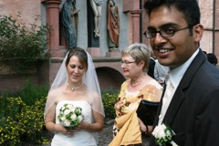 Eventually I made my way to Hirschhorn to be the best man at Mr. Kulkarni's wedding... |
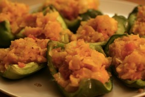 Once back from the trip, I played with a few flavor combinations I picked up along the trip... Here's a baked green pepper with stuffed potato... |
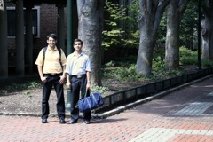 Archis Apte made his way through Philadelphia at one point.... Akshay Rajhans joined us for a tour of the campus... Archis is now married? and works at Yahoo. Akshay was a terminal Master's student back then was gently nudged towards a PhD.. Archis is probably with Yahoo while Akshay is doing a PhD in CMU.. |
|
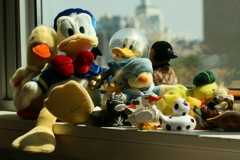 Over the years I have accumulated a fabulous collection of ducks.... They are a well-behaved group and are never shy for a photo... |
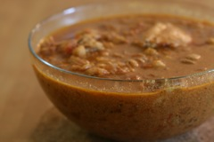 Baked chicken with chickpeas... A faux parisien dish replicated from my travel experience.. |
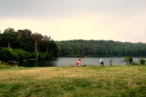 The Penn Outdoors was one of my favorite campus clubs in the first couple of years at Penn... A group of us went up to the Catskills for hiking/camping.. We swam in a lake that afternoon and scrambled to safety to avoid getting drenched in the sudden thunderstorm that came out of nowhere... |
|
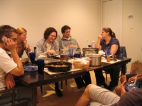 Potluck at Rafi+Tanmoy+Arun house in South Philly.. All of them have since moved out of the house and gone their own separate ways... |
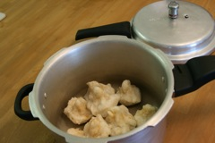 In my younger and more adventurous years, I have even tried to make modak :P |
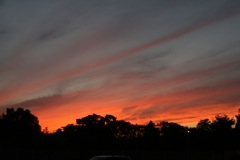 The skies over Philadelphia can turn fabulous without much warning... Here's a late summer sky just after sunset near my apartment... |
|
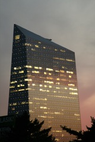 Cira Centre on an ordinary day is a pathetic looking building... But a dash of color can tranform it completely... |
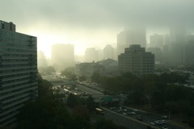 A foggy day in Philly... Clouds, fog and mist periodically shroud much of the city year round... and the buildings dissapear into above the vapor line with regular ease.. |
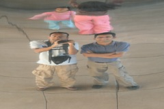 Shortly thereafter, I embarked on yet another trip... this time to Chicago with Pinkesh, Vaibhav and Sonali... (yeah 2007 is full of travel and no work..) |